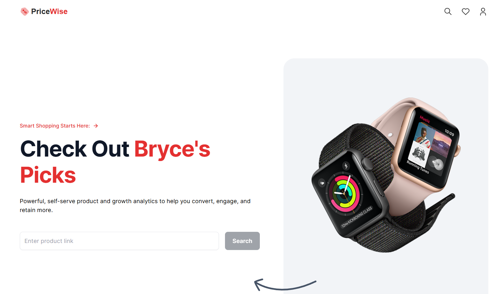

Selection Logic
Flagship product work
Showcase-led websites
Systems and automation
Weak projects stay out. Strong projects get space, hierarchy, and better storytelling.
Projects
The strongest work should carry the page first. Everything else stays in support.
Selection Logic
Weak projects stay out. Strong projects get space, hierarchy, and better storytelling.
Lead Project
Product surface, workflow, and alert delivery in one stronger story.
A darker, sharper trading interface built to filter obvious traps, surface risk context, and make alerts feel credible at a glance.
Why it lands
Supporting Work
Showcase-heavy when the project earns it. Simpler when it should stay quick.

A more open visual system built to scan fast, put the product first, and keep the conversion path clean.
A lighter visual mood with motion and personality that still feels structured instead of chaotic.
Editorial Rule
The goal is a better impression, not a giant grid of everything. Strong work gets room. Supporting work stays brief.
Systems / Automation
The visual layer changes. The clarity standard does not.
Automation work that still benefits from sharper status design and simpler interaction points.
Smaller systems still need to feel legible, dependable, and worth trusting at a glance.
Next Step
Websites, product surfaces, and systems work best when the visual layer and the execution layer move together.